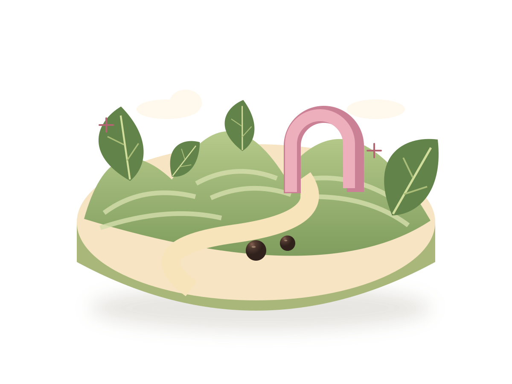
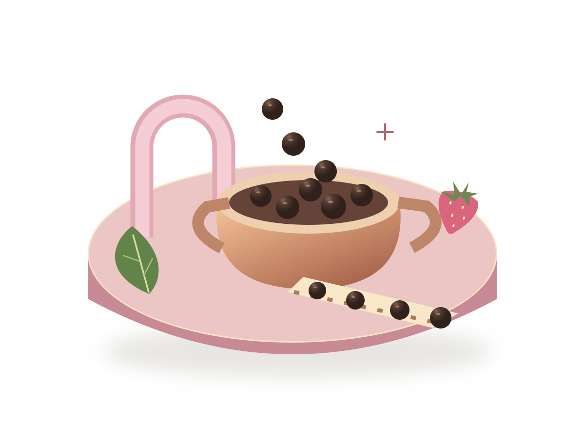
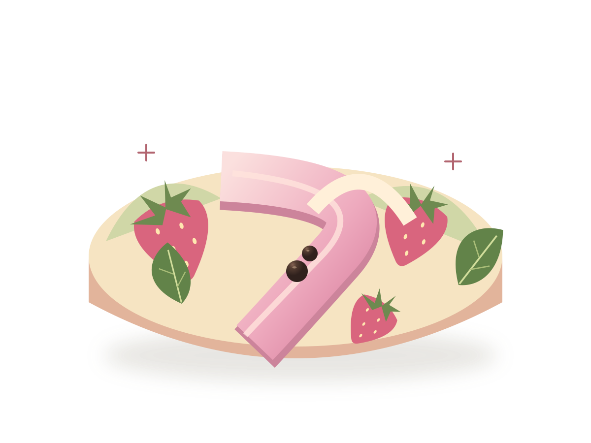
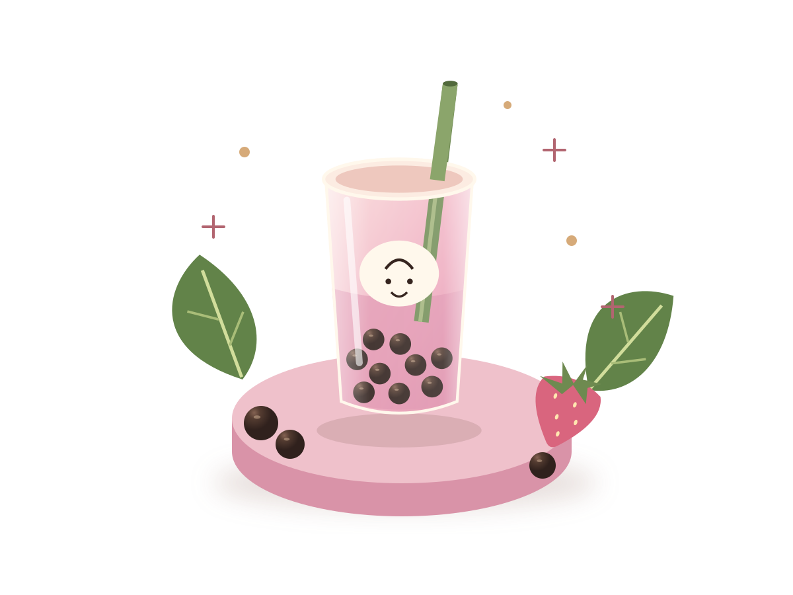

01 · THE TEA GARDEN
A tiny world. A very good sip.
Fly forward along the garden path toward the pink arch. This arch connects the first two worlds.
YOUR SCROLL WORLD PROJECT KIT
Four ingredient worlds. Three connected transitions. One strawberry bubble tea. Your supplied video now fills the scrolling background and follows your scroll in both directions. Your design files and Codex production prompts are included.
npm start, and open localhost:4173. Node.js must be installed; no package installation is needed.
Fly forward along the garden path toward the pink arch. This arch connects the first two worlds.

Pass a copper bowl and follow the pearls toward the strawberry-milk river.

A pink river and oversized strawberries lead the camera toward the final plaza.

The finished drink brings all the ingredients together. Settle on the cup, then invite visitors to replay.
Georgia headlines. Italic berry-coloured emphasis. Simple Arial body text. Soft miniature materials, warm daylight, and one continuous camera move.
Generate the garden. Extract its actual last frame. Use that exact image to begin the connector. Extract the connector's actual last frame and use it to begin the kitchen. Check both seams in motion before creating the rest.
garden.mp4 → last frame → connector.mp4 → last frame → kitchen.mp4
Matching words in two prompts is not enough. The actual image at each boundary matters. Keep the camera direction, speed, light and geometry consistent too.